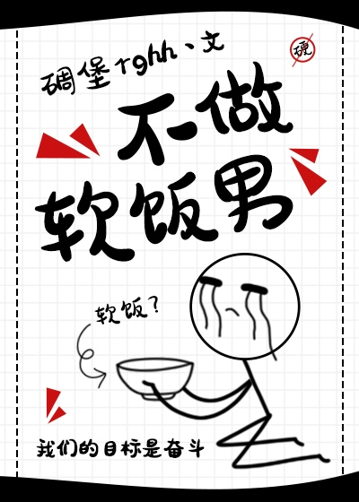

En este mundo, siempre hay un tipo de hombre que no quiere superarse. Solo se preocupa por sí mismo, a cualquier precio. Su meta en la vida es ser un amante, y lo usará hasta que ya no le sirva.
Sistema de Autosuficiencia: ¡Nuestra meta es ascender! ¡Nuestra meta es perseverar! ¡Debemos ser autosuficientes y autosuficientes!
Cuando el sistema ha obligado a numerosas almas a entrar en los cuerpos de aquellos que sólo confían en sus amantes, ¿a qué podría conducir esto?
En otras palabras, se trata de una historia en la que el personaje principal se transforma en un ser humano despreciable y crea su propio destino.